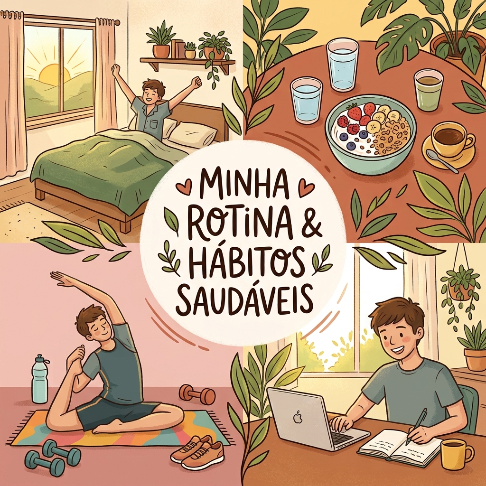

Meu primeiro post
Por Thiago Miguel
Boas-vindas ao meu novo blog! Aqui vou compartilhar a minha rotina e os hábitos saúdaveis que tenho e que pretendo ter.
Vou compartilhar um pouco do meu dia a dia com vocês.

Por Thiago Miguel
Boas-vindas ao meu novo blog! Aqui vou compartilhar a minha rotina e os hábitos saúdaveis que tenho e que pretendo ter.